Aussehen - erweiterte Konfiguration
Dieser Artikel wurde für die folgenden Ubuntu-Versionen getestet:
Dieser Artikel ist mit keiner aktuell unterstützten Ubuntu-Version getestet! Bitte diesen Artikel testen und das getestet-Tag entsprechend anpassen.
Zum Verständnis dieses Artikels sind folgende Seiten hilfreich:
Das Thema für ein GRUB 2-Menü kann auch über eine andere Datei als /etc/default/grub erfolgen. Der Vorteil dabei ist, das sämtliche Einstellungen zum Aussehen ausschließlich über diese zentrale Datei gemacht werden. Folgende Einstellungen sind unter anderem möglich:
Frei positionierbare Text- und Grafikbereiche
Das Verwenden anderer Schriftarten
Verwendung von Farben für Schrift und Hintergrund
Größenabhängige Rahmen (Styled Boxes)
Hintergrundbilder
Hier ein paar Beispiele, die die Möglichkeiten veranschaulichen. Der Link unter den Bildern startet das Herunterladen der Themen. Hinweise zur Verwendung sind nach dem Entpacken in der Datei readme zu finden:
| 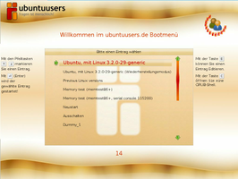 |
Ein ubuntuusers.de-Thema  |
| 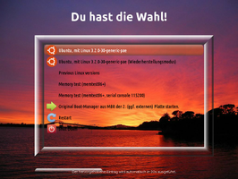 |
| "Glas" mit DEINEM Hintergrund |
| 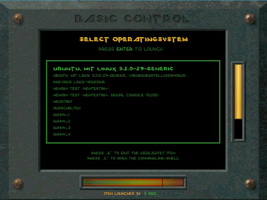 |
| Descent basiertes Thema |
Es gibt keine einfache Möglichkeit, ein neues Design als Vorschau anzuzeigen. Änderungen werden erst beim Booten des Betriebssystems sichtbar. Für umfangreiche Änderungen am Erscheinungsbildes des GRUB 2-Menüs sollte man sich mit Hilfe einer Bildbearbeitung eine 1:1 Ansicht erstellen. Hierin lässt sich das grundsätzliche Aussehen überprüfen und die Maße von Textboxen und Grafiken auslesen, ohne den Rechner neu booten zu müssen. In einer Virtuellen Maschine können das Thema getestet und mögliche Fehler korrigiert werden.
Hinweis:
Alle Änderungen an GRUB 2 und der Konfiguration können nur mit Root-Rechten [1] durchgeführt werden.
Ein normales GRUB 2-Menü¶
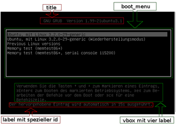 Ein normales GRUB 2-Menü besteht bei genauer Betrachtung aus mehreren Komponenten:
| Komponente | Was ist änderbar? | Siehe |
| Der Hintergrund | Andere Farbe, Hintergrundbild | globale Angaben |
| Der Titel (title) | Schriftart, Text und Farbe | globale Angaben, Schriftarten |
| Das Bootmenü | Diese Liste bietet sehr viele Gestaltungsmöglichkeiten. | boot_menu |
| Textzeilen (label) | Position, Schriftart, Farbe | label |
| Gruppierte Komponenten (vbox) | Position | vbox |
Neben diesen Komponenten gibt es noch eine Vielzahl weiterer Elemente, die die Gestaltungsmöglichkeiten erweitern:
Fortschrittsanzeigen als Text- oder Balken-Anzeige, Farben und Text anpassbar.
image: Bereiche in denen Bilder (z.B. ein Logo) dargestellt werden. Größe und Position sind anpassbar.
Vorbereitungen¶
Ein GRUB 2-Thema besteht aus einer Textdatei (Konfigurationsdatei), Schriftarten und Grafiken. Diese Dateien werden im Ordner /boot/grub/themes/NAMEdesTHEMAS abgelegt. Icons liegen separat. Beispiel: /boot/grub/themes/ubuntuusers/. Die Konfigurationsdatei heißt normalerweise theme.txt, kann aber auch anders lauten.
Um das Thema in GRUB 2 einzustellen, bedarf es der Anpassung folgender Variablen in /etc/default/grub:
GRUB_THEME="/PFAD/ZUR/KONFIGURATIONSDATEI"
GRUB_GFXMODE=BREITExHÖHE
Die letzte Angabe ist nur notwendig, wenn eine andere Auflösung als 640x480 Pixel gewünscht ist. Hinweise zur Ermittlung der richtigen Auflösung findet man im Grundlagenartikel.
Nach den Änderungen muss GRUB 2 aktualisiert werden.
Bei folgenden Änderungen am GRUB 2-Thema ist GRUB ebenfalls zu aktualisieren:
Wenn eine neues Bildformat (zum Beispiel: .jpg oder .png) zum Thema hinzugefügt wird
Wenn eine neue Schriftart, -größe zum Thema hinzugefügt wird
Bei Änderungen in der Konfigurationsdatei (Themendatei) muss der Befehl nicht ausgeführt werden.
Hinweis:
Die verwendeten Grafiken dürfen keine indizierten Farben enthalten. Das kann z.B. mit GIMP überprüft werden (Menü: Bild:Modus).
Konfiguration¶
Die Konfigurationsdatei ist eine einfache Textdatei und kann mit jedem Editor bearbeitet werden. Sie besteht aus den Globalen Konfigurationsangaben und einer Reihe von Komponentendeklarationen und der Zuweisung von Werten.
Hinweis:
Die Komponente boot_menu sollte immer angegeben sein, da sonst keine Möglichkeit besteht, ein Betriebssystem zu starten.
Globale Konfigurationsangaben¶
Globale Angaben stehen gewöhnlich am Anfang der Datei und betreffen das Aussehen des Hintergrundes, des Titels und der GRUB 2-Konsole. Zu beachten ist, das hier alle Werte hinter einem Doppelpunkt stehen müssen.
| Angabe | Bemerkung |
title-font: "DejaVu Sans Regular 20" | Bezeichnet die Schriftart für den Titel. Wird die Angabe weggelassen, wird die Standard Schriftart benutzt. |
title-text: "Guten Tag, ich bin das GRUB-Menü" | Soll kein Titel erscheinen, ist ein Leerstring (= "") anzugeben. |
title-color: "Farbe" | Schriftfarbe für den Titel. Farben können wie im Abschnitt Komponentendeklaration definiert werden. |
desktop-image: "Hintergrundbild" | Definiert das Bild für den gesamten Hintergrund. Nicht passende Bilder werden automatisch skaliert. Mögliche Formate sind: .png, .jpg und .tga |
desktop-color: "Hintergrundfarbe" | Definiert eine Farbe für den gesamten Hintergrund, falls kein Hintergrundbild vorhanden ist. |
terminal-box: "Rahmenelemente_*.png" | Optional; definiert bei Aufruf der GRUB-Shell einen Rahmen (Styled Box) um das GRUB-Shell Fenster. |
terminal-font: "Unknown Regular 16" | Setzt die Schriftart für das GRUB-Terminal. Bei der Verwendung eigener Schriftarten sollte diese Variable mit der GRUB Standard Schriftart "Unknown Regular 16" gesetzt werden! |
Komponentendeklaration¶
Eine Komponente des GRUB-Menüs wird folgendermaßen erstellt:
1 2 3 4 5 6 7 | #Erste Zeile, Überschrift
+ label{
top = 20
width = 100%
color = "red"
text = "Willkommen im ubuntuusers.de GRUB-Menü"
}
|
Erläuterung der Zeilen:
Zeilen die mit einer Raute beginnen, sind Kommentare
Durch ein „+“ und Angabe des Komponentennamens (hier: label) wird eine Komponente deklariert. Alles zwischen den geschweiften Klammern gehört zu dieser Komponente.
und folgende Zeile
Die Angabe von Zahlenwerten (Positions- und Größenangaben) kann unterschiedlich erfolgen:
Als Pixelangabe (hier: „20“)
Als Prozentangabe (hier: „100%“)
Gemischt: 100%-80
Farben können als SVG-Farbnamen
 , in Hexadezimalform ("#8899ff") oder als RGB-Werte ("255, 255, 255") angegeben werden. Alle Angaben müssen in Anführungszeichen stehen.
, in Hexadezimalform ("#8899ff") oder als RGB-Werte ("255, 255, 255") angegeben werden. Alle Angaben müssen in Anführungszeichen stehen.Worte oder Sätze müssen in Anführungszeichen gesetzt werden
Allgemeine Angaben¶
Folgende Angaben können in jeder Komponente verwendet werden:
| Angabe | Bemerkung |
left = 20 | 10% | 20%+50 | Abstand von linker Seite der Komponente zum linken Bildschirmrand. Mögliche Werte sind: Pixel (hier: 20), Prozentangaben (10%) oder eine Mischung aus beiden (20%+50). |
top = 20 | 10% | 100%-150 | Abstand der Komponente zum oberen Bildschirmrand. |
width = 50 | 100% | 100%-50 | Breite der Komponente. Ist bei einem label der Text breiter als mit width angegeben, wird das label verbreitert. |
height = 50 | 100% | 100%-200 | Höhe der Komponente. |
Komponenten¶
Die Komponentenliste in der Konfigurationsdatei wird von GRUB von unten nach oben abgearbeitet. Alle Komponenten die in der theme.txt weiter oben stehen, werden als letztes dargestellt (Ausnahme: Globale Konfigurationsangaben). Dies ist bei überlappenden Komponenten zu beachten. Möchte man zum Beispiel das ein Bild das Boot-Menü teilweise überdeckt, muss es in der Konfigurationsdatei oberhalb der Boot-Menü-Komponente stehen.
boot_menu¶
| 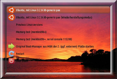 |
| Bootmenü mit Rahmen und individuellen Icons |
| 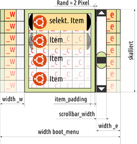 |
| Lage des Menübereiches und des Rollbalkens (Scrollbar) |
| 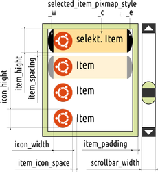 |
| Maße von Menüpunkten und des Rollbalkens |
Die boot_menu-Komponente stellt alle gefundenen Menüeinträge (üblicherweise Betriebssysteme) in einer Liste zur Verfügung. Die Darstellung lässt sich in vielerlei Hinsicht anpassen.
Boot-Menü Einträge¶
Die Einträge des Boot-Menüs werden automatisch eingefügt. Sind Symbole (vor den Texteinträgen) definiert, werden sie ebenfalls automatisch verwendet. Neben den allgemeinen Angaben können folgende Eigenschaften geändert werden:
| Angabe | Bemerkung |
item_font = "DejaVus Sans Regular 20" | Verwendete Schriftart für einen nicht ausgewählten Eintrag. |
selected_item_font = "DejaVus Sans Regular 20" | Verwendete Schriftart für einen ausgewählten Eintrag. |
item_color = "#FB7C22" | Schriftfarbe eines nicht ausgewählten Eintrags (Standardwert = "black"). |
selected_item_color = "#E21818" | Schriftfarbe eines ausgewählten Eintrags (Standardwert = "black"). |
item_height = 20 | Höhe eines Eintrags (Standardwert = 42 Pixel). |
item_spacing = 10 | Abstand zwischen den einzelnen Menüeinträgen (Standardwert = 16 Pixel). |
icon_width = 40 | Iconbreite (Standardwert = 32 Pixel). Werden keine Icons benutzt, kann dieser Wert auf "0" gesetzt werden. Damit wird der Abstand zwischen dem linken Bild (Kennung: _w, siehe Styled-Box) und dem Text reduziert. |
icon_hight = 40 | Iconhöhe (Standardwert = 32 Pixel). |
item_padding = 5 | Abstand zwischen den Menüeinträgen und dem Rahmen (Standardwert = 14 Pixel). |
item_icon_space = 5 | Bestimmt den Abstand zwischen einem Boot-Menü-Eintrag und dem Boot-Menü Icon (Standardwert = 4 Pixel). |
Rahmen für das gesamte Boot-Menü¶
Dieser Rahmen wird mit den Bildern einer Styled-Box definiert.
| Angabe | Bemerkung |
menu_pixmap_style = "BILDNAME_*.png" | Es werden alle 9 Elemente (Kennung: _nw, _n, _ne, _w, _c, _e, _sw, _s und _se) unterstützt. Auch wenn diese nur teilweise vorhanden sind. |
Rahmen für die Einträge¶
Dieser Rahmen dient zur „Markierung” eines ausgewählten Boot-Menü Eintrags und wird mit den Bildern einer Styled-Box definiert.
| Angabe | Bemerkung |
selected_item_pixmap_style = "BILDNAME_*.png" | Es werden alle 9 Elemente (Kennung: _nw, _n, _ne, _w, _c, _e, _sw, _s und _se) unterstützt. Auch wenn sie nur teilweise vorhanden sind. |
Scrollleiste¶
Ein Rollbalken (scrollbar) zeigt an, dass mehr Boot-Menü-Einträge vorhanden sind, als in das Boot-Menü hineinpassen. Diese Leiste liegt innerhalb des rechten Elements des Boot-Menü Rahmens (Kennung _e). Das rechte Element des Rahmen muss also breit genug sein, um die Scrollleiste aufnehmen zu können. Für die Scrollleiste selber werden wieder Bilder einer Styled-Box benötigt, allerdings sollten nur die Bilder mit Kennung _n, _c und _s verwendet werden, da es sonst zu Fehlern in der Darstellung kommt. Bei Verständnisproblemen sollte man sich die Beispielthemen, die diesem Artikel beiliegen, anschauen.
| Angabe | Bemerkung |
scrollbar = true | Scrollbar anzeigen oder verstecken. Mögliche Werte: true = Scrollbar anzeigen, false = Scrollbar nicht anzeigen. |
scrollbar_width = 20 | Definiert die Breite der Scrollbar. Der Wert muss der tatsächlichen Breite der Bilder von scrollbar_frame entsprechen. |
scrollbar_frame = BILDNAME_*.png | Definiert den Rahmen der Scrollleiste. |
scrollbar_thumb = BILDNAME_*.png | Definiert den Mittelteil der Scrollleiste. Es muss mindestens das Bild mit der Kennung _c vorliegen. |
label¶
Ein Label ist für einzeilige Textausgaben zuständig. Neben den Allgemeinen Angaben sind noch folgende Angaben möglich:
| Angabe | Bemerkung |
text = "Der Text der erscheinen soll" | Zeilenumbrüche sind bei einem label nicht möglich. |
font = "DejaVu Sans Regular" | Die Schriftart des Textes. Es wird der interne Schriftname angegeben. |
color = "red" | Farbe des Textes. |
align = "left" | "center" | "right" | Positioniert die Textzeile innerhalb des label (links, zentriert oder rechts). Lässt man die Angabe weg, so ist "left" (links) der Standard. |
Möchte man mehrere Zeilen untereinander setzen, so muss man mehrere Label hintereinander definieren. Am besten geht das mit Hilfe einer vbox.
Ein label kann auch für die Anzeige der verbleibenden Sekunden (Countdown) genutzt werden:
| Angabe | Bemerkung |
id = "__timeout__" | Voraussetzung, dass ein Countdown bearbeitet wird. |
text = "Noch %d Sekunden." | Das „%d“ im Text wird durch die verbleibenden Sekunden ersetzt. Mehr Möglichkeiten bieten die Fortschrittsanzeigen. |
image¶
Bei Verwendung von Größenangaben (width, hight) wird das Bild auf die Angaben vergrößert, ansonsten werden die nativen Werte vom Image übernommen. Zusätzlich zu den allgemeinen Positionsangaben:
| Angabe | Bemerkung |
file = "Logo.png" | Das Bild ist im Themenverzeichnis abzulegen. |
Fortschrittsanzeigen¶
| 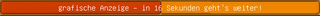 |
| Eine grafisch animierte Fortschrittsanzeige |
Der in der GRUB 2/Konfiguration gesetzte GRUB_TIMEOUT=Wert (Zeit in Sekunden) wird mit einer speziellen Anzeige visualisiert. Es werden drei Komponenten-Arten ("Progress Indicator") unterschieden:
Textbasierte Balkenanzeige ("Solid Color Horizontal Progress Bar")
Grafische Balkenanzeige ("Styled Horizontal Progress Indicator")
Grafische Kreisanzeige ("Circular Progress Indicator") - ohne eigenen Anzeigetext
Der Text einer Balkenanzeige kann entweder frei gewählt, oder mit Hilfe unten stehender Variablen als lokalisierter Standard ausgegeben werden.
| Angabe | Ausgegebener Text |
text = "In %d Sekunden gehts los!!!!" | „In 5 Sekunden gehts los!!!“ (Das „%d“ wird in eine Zahl gewandelt) |
text = "@TIMEOUT_NOTIFICATION_LONG@" | „Der hervorgehobenen Text wird automatisch in xxs ausgeführt.“ |
text = "@TIMEOUT_NOTIFICATION_MIDDLE@" | „xxs verbleibend.“ |
text = "@TIMEOUT_NOTIFICATION_SHORT@" | „xxs“ |
progress_bar (Textbasierte Balkenanzeige)¶
Zusätzlich zu den allgemeinen Positions- und Schriftangaben:
| Angabe | Bemerkung |
id = "__timeout__" | unveränderbare Pflichtangabe! |
text_color = "red" | Textfarbe |
bg_color = "#fb8b00" | Hintergrundfarbe |
fg_color = "#d40000" | Vordergrundfarbe |
border_color = "black" | Rahmenfarbe |
show_text = "true" | Anzeigetext anzeigen (Standard: "true") |
progress_bar (Grafische Balkenanzeige)¶
In der grafischen Balkenanzeige werden statt der textbasierten bg_color =, fg_color = und border_color = die grafischen Elemente einer Styled Box verwendet.
| Angabe | Bemerkung |
bar_style = Hintergrundbalken_*.png | Typ: Styled Box für den Rahmen. |
highlight_style = Vordergrundbalken_*.png | Typ: Styled Box für den Fortschrittsbalken - verändert sich mit ablaufender Zeit. |
| Verwendet werden die Elemente mit der Kennung: _c (zuzätzlich optional: _n und _s). Die anderen Elemente führen ggf. zu einem optischen Fehler. | |
| 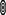 | 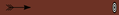 | |
highlight_style =Pfeil_e.png | bar_style =Ziel_e.png | Ergebnis: Pfeil fliegt auf Ziel |
Zur Veranschaulichung der Möglichkeiten ein Beispiel von einem fliegenden Pfeil, der die verstrichene Zeit versinnbildlicht:
Werden die *_c.png transparent erstellt und ausnahmsweise *_e.png genutzt, können Bilder (Images) (hier: der Pfeil) verzerrungsfrei bewegt werden.
circular_progress (Grafische Kreisanzeige)¶
| 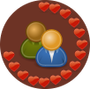 | |
| Beispiele für circular progress | |
| 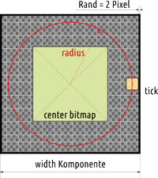 | |
| Schemazeichnung | |
Es werden zwei Bilder benötigt:
Ein Zifferblatt ("center_bitmap")
Ein Zeigerelement ("tick_bitmap") - rotiert, ohne sich selbst zu drehen, im Uhrzeigersinn
Maßgeblich für die Geometrie sind die jeweiligen Breitenangaben (width). Die Ausrichtung ist jeweils mittig. Beispiel:
Gegeben sind:
center_bitmap mit width = 120 Pixel
tick_bitmap mit width = 20 Pixel
das Zeigerelement soll den Mittelpunkt des center_bitmap mit einem Radius von 100 Pixel umkreisen.
Die Breite der Komponente errechnet sich wie folgt:
width(Komponente) = 2 x Radius + width(tick_bitmap) + 4 Pixel
width(Komponente) = 2 x 100 + 20 + 4 = 224 Pixel
Es verbleibt immer ein Rand von 2 Pixel zwischen Zeigerelement und Komponentenaußenkante. Passt das center_bitmap nicht in die Angaben für die Komponente, wird es beschnitten. Üblicherweise wird die Höhe (height) der Komponente gleich der errechneten Breite (width) gesetzt.
Zusätzlich zu den allgemeinen Positionsangaben:
| Angabe | Bemerkung |
id = "__timeout__" | Unveränderbare Pflichtangabe! |
center_bitmap = "center.png" | Hintergrundbild, Name frei wählbar. |
tick_bitmap = "tick.png" | Zeigerelement, Name frei wählbar. |
start_angle = "200" | Anfangswinkel (optional; "200" entspricht ca. 12:00 Uhr). |
num_ticks = "30" | Anzahl Zeigerelemente, sollte mit Anzahl Sekunden übereinstimmen. |
ticks_disappear = "true" | "false" | Anzeige verschwindet (Standard: "true"); Anzeige baut sich auf ("false"). |
Container¶
| 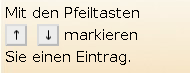 |
| Kombinierte Container vbox und hbox Quellcode |
Möchte man mehrere Komponenten zu einem logischen Block gruppieren kann man Container benutzen. Alle Container werden mit den allgemeinen Angaben positioniert. Neben normalen Komponenten können Container auch weitere Container beinhalten.
Hinweis:
Timerkomponenten funktionieren in Containern nicht!
vbox¶
Möchte man zum Beispiel mehrere Textzeilen untereinander setzen, können aufwändige Positionsangaben pro label anfallen. Besser ist es, die einzelnen label in einen vbox-Container zu setzen:
+ vbox{
top = 240
left = 5
+ label { font = "DejaVu Sans Regular 15" text = "Erste Textzeile" }
+ label { font = "DejaVu Sans Regular 15" text = "Zweite Textzeile" }
+ label { font = "DejaVu Sans Regular 15" text = "Dritte Textzeile, sehr breit" }
}Die Breite des vbox-Containers wird durch die breiteste Komponente bestimmt (hier die dritte Zeile). Dem entsprechend werden alle anderen Komponenten innerhalb des Containers verbreitert. Höhenangaben der Komponenten werden eingehalten.
Hinweis:
Breitenangaben werden nicht berücksichtigt!
hbox¶
Möchte man mehrere Komponenten nebeneinander setzen, bietet sich dieser Container an:
+ hbox {
# Ein Bild
+ image { file = "key_up.png" }
# Eine Textausgabe (hier ein Leerstring um einen Abstand zum nächsten Bild einzustellen)
+ label { width = 10 text = "" }
# Ein Bild
+ image { file = "key_down.png" }
# Eine Textzeile
+ label { font = "DejaVu Sans Regular 15" height = 15 text = " markieren" }
}Die Höhe des Containers wird durch die größte Höhe der Komponente bestimmt, die innerhalb des Containers definiert wurde. Alle anderen Komponenten werden in der Höhe entsprechend angepasst. Breitenangaben der Komponenten werden eingehalten.
canvas¶
Dieser Container ist eine Art Leinwand. Alle Angaben - insbesondere die Positions-, Größen- und %-Angaben - von Komponenten innerhalb des Containers beziehen sich und sind auf diesen begrenzt, d.h. zum Beispiel width = 100% entspricht der canvas-Breite.
+ canvas {
...
+ Komponenten
...
}Boot-Menü Icons¶
Die Einträge im Bootmenü lassen sich mit unterschiedlichen Symbolen (Icons) versehen. Hierzu werden die Angaben --class BILDNAME in der boot/grub/grub.cfg ausgewertet. Beispiel:
menuentry 'Ubuntu, mit Linux 3.2.0-29-generic-pae' --class ubuntu --class gnu-linux --class gnu --class os {
...
}Es werden hier vier --class-Werte definiert, denen man jeweils ein Symbol zuordnen kann. Weist ein Menüeintrag mehrere --class-Einträge auf, werden sie von links nach rechts abgearbeitet, das zuerst gefundene Symbol wird angezeigt. Der Dateiname des Icons besteht aus dem --class-Wert und der Erweiterung .png (hier wäre er für den ersten Eintrag zum Beispiel ubuntu.png). Das Icon muss im Format png abgespeichert werden. Mögliche Speicherorte:
Das Unterverzeichnis /boot/grub/themes/VERZEICHNIS/icons im definierten Themenverzeichnis (Standard)
Falls die Variable „icondir=“ gesetzt ist, zusätzlich dieser Pfad; Beispiel:
icondir=(hd0,1)/boot/grub/themes/icons
Die Variable icondir kann via Skript-40-custom gesetzt werden.
Unter Ubuntu werden verschiedene --class Werte automatisch gesetzt, die mit einem Symbol belegt werden können, es gilt:
Es werden keine Ubuntu-Versionen unterschieden
Für memtest-Einträge werden keine Symbole spezifiziert
Für den Untermenü-Eintrag "Previous Linux versions" (submenu) ist ebenfalls kein Symbol spezifiziert
| Automatisch gesetzte --class-Werte | ||
| Menüeintrag | --class-Werte | |
| Hauptmenü | „Ubuntu“ und „Ubuntu (recovery mode)“ | --class ubuntu --class gnu-linux --class gnu --class os |
| „Windows“ | --class windows --class os | |
| Einträge im Untermenü „Previous Linux versions“ | „Ubuntu“ und „Ubuntu (recovery mode)“ | --class gnu-linux --class gnu --class os |
Eigene via Skript-40-custom erstellte Einträge können leicht angepasst werden, z.B.:
menuentry "Restart" --class restart {reboot}
menuentry "Shut Down" --class shutdown {halt}Hinweis:
Die --class-Einträge dürfen keine Erweiterung .png besitzen!
Styled Box¶
| 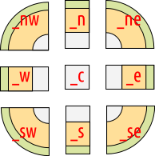 |
| Elemente einer Styled Box |
Manche Komponenten bieten die Möglichkeit, diese grafisch mit Rahmenelementen aufzupeppen. Dafür werden maximal 9 separate Bilder (Format .png) mit definierter Kennung benötigt. Allgemein:
Dateiname = Bildname_KENNUNG.png
Die KENNUNG im Dateinamen bestimmt die Position des Bildelements. So steht der Dateiname Bildname_w.png für die Position links (Westen). Unterstützt eine Komponente die Eigenschaft vom Typ "styled box", wird diese wie folgt angegeben:
Eigenschaft = BILDNAME_*.png
Hinweis:
Vorhandene Elemente werden dabei automatisch verwendet, und wenn nötig auf die angegebene Komponentengröße skaliert. Je nach Komponente werden nicht alle Elemente benötigt bzw. führen sogar zu kleinen optischen Abweichungen.
| Element | Kennung | Skalierbarkeit |
| Eckteile | _nw, _nw, _sw, _se | keine |
| Seitenteile (link & rechts) | _w, _e | vertikal |
| oben & unten | _n, _s | horizontal |
| Mittelteil | _c | vertikal & horizontal |
Schriftarten¶
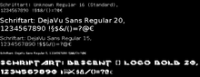
Wie Schriftarten in das GRUB 2-spezifische Format .pf2 umgewandelt werden können, steht im Grundlagenartikel im Abschnitt Schriftarten.
Hinweis:
Die Verwendung eigener Schriftarten, mit unvollständigem Zeichensatz, kann GRUB 2 zum Absturz bringen! Es lässt sich dann zum Beispiel kein Betriebssystem starten oder Befehlszeilen editieren. Um das zu vermeiden ist bei Verwendung eigener Schriftarten unbedingt die Variable terminal-font: zu setzen. Siehe dazu Globale Konfigurationsangaben.
Die Option -v gibt unter anderem auch den internen Schriftnamen aus, den man zum Beispiel in einem label für eine Schriftart angeben muss.
Hinweise¶
Ladezeit¶
Je größer die Gesamtgröße aller Dateien, desto länger die Ladezeit beim Bootvorgang. Die Styled-Box benötigt etwas mehr Zeit für den Aufbau.
Grafische Nebeneffekte¶
Leider lassen sich bisher gewisse optische Effekte nicht vermeiden:
Beim Verlassen des GRUB 2-Menüs wird kurz die GRUB-Shell eingeblendet
Der Abbruch des Timers läßt alle Komponenten mit der
id = "__timeout__"verschwinden
Eigene Themen vorstellen¶
Im hiesigen Forum Grafik- und Desktopgestaltung gibt es einen Sammelthread "GRUB Aussehen - erweiterte Konfiguration - Beipiele" mit GRUB 2-Themen. Dort kannst Du Dein Thema auch anderen zeigen.
Diskussion
auf Ubuntuforums.org, in dem auch GRUB 2-Themen vorgestellt werden.
Links¶
Intern¶
GRUB 2/Aussehen - Design-Grundlagen
GRUB 2/Aussehen - einfache Konfiguration - Wenn man nur ein Hintergrundbild haben möchte
Fertige Themen, ausreichend kommentiert und sofort einsetzbar:
ubuntuusers_grub_theme.tar.gz
- Ein Thema mit dem Thema ubuntuusers. Größe: 1024x768glas_grub_theme.tar.gz
- Ein Thema mit dem Thema "Glas".descent.tar.gz
- Das Spiel Descent als Grundlage für ein Thema. Größe: 1024x768
GRUB 2/Konfiguration - Einstellungsmöglichkeiten von GRUB
GRUB 2
 - Übersicht zu GRUB
- Übersicht zu GRUB
Extern¶
GRUB Graphical Menus Project
(teilweise veraltet)A Beginner's Guide to Theming GRUB2
- Diskussion auf Ubuntuforums.org
- Erstellt mit Inyoka
-
 2004 – 2017 ubuntuusers.de • Einige Rechte vorbehalten
2004 – 2017 ubuntuusers.de • Einige Rechte vorbehalten
Lizenz • Kontakt • Datenschutz • Impressum • Serverstatus -
Serverhousing gespendet von